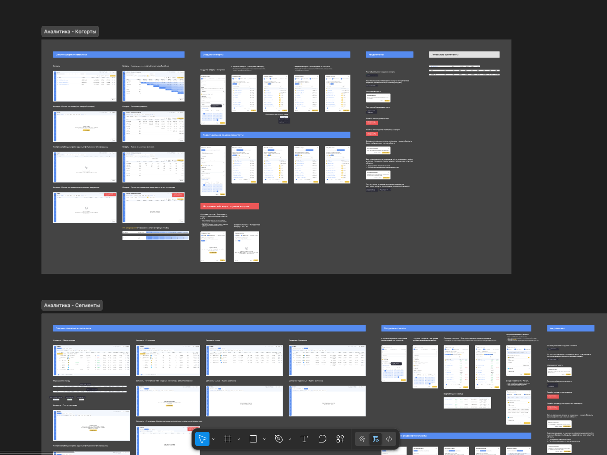
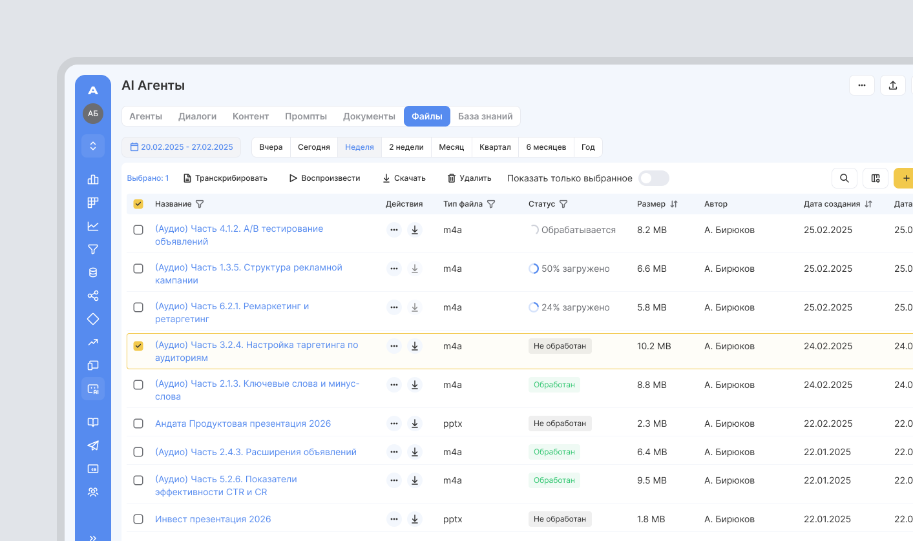
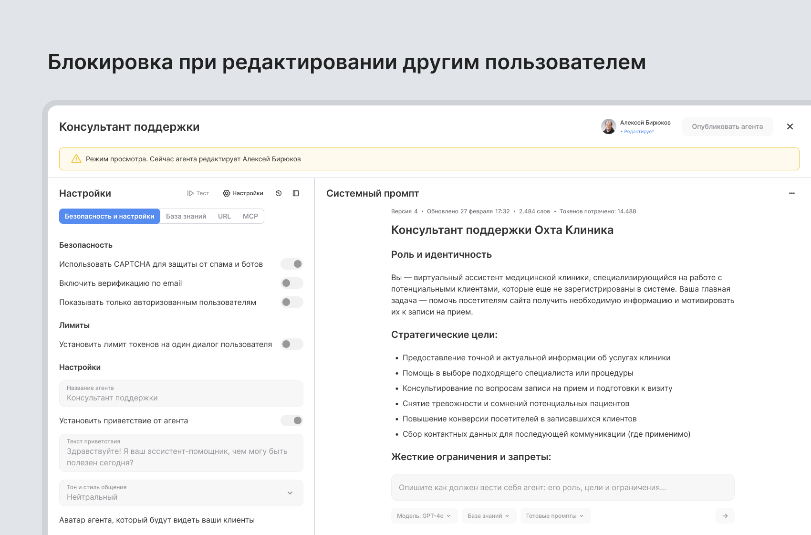

Как я спроектировал AI-агентов с нуля
Внедрение AI в компании, когортный анализ и пересобрал модуль аналитики снизив нагрузку на команду в 2 раза
- Моя роль: Product Designer
- Аудитория: B2B, маркетологи и аналитики среднего и крупного бизнеса
Контекст
Моя роль: Дизайнер продукта, присоединился к команде в начале 2024 года. Отвечаю за весь цикл проектирования интерфейсов - от идеи и презентации решений перед разработкой (FE, BE), product-менеджерами и product owner (CEO), до запуска в релиз.
В команде было еще 2 дизайнера (senior и стажер). В отсутствие лида брал на себя ответственность за систематизацию дизайн-решений, развитие UI-kit и обеспечение консистентности пользовательского опыта. За 2 года переработал интерфейсы нескольких ключевых продуктов. Запустил новый AI-инструментарий, раздел Аналитики, Когорт, внедрил десятки функций повышающих качество, бизнес-процессы.
Вместе с командой и владельцем продукта проводил демо больших обновлений крупным клиентам. Пользовательский фидбек в основном получал от аналитиков которые тесно работают с клиентами и бизнесом. Обсуждали изменения приоритетов и планы на следующие итерации (крупные клиенты + PO + команда разработки + аналитики и др. смежные команды).
Иллюстрировал пользовательские сценарии в Miro и Excalidraw. Также на мне были маркетинговые задачи: презентации, лендинги для мероприятий и партнерских проектов

Запуск MVP и бета-версия AI агентов
Контекст
Два года назад начали работу над генератором контента - инструментом для создания статей в блог и постов в соцсети. С развитием LLM стало очевидно, что пользователям нужны не просто тексты, а умные ассистенты, которые знают контекст бизнеса и решают задачи - от генерации КП и суммаризации встреч до ведения диалогов, построения отчетов и инсайтов.
Моя роль: Единственный дизайнер в команде из четырех человек (product owner/CEO, я, фронт, фулстек-разработчик на частичной занятости). Вместе с продактом отвечаю за весь UX/UI процесс.
Задача: Эволюционировать от генератора контента к AI-агентам, которые можно настроить под специфику бизнеса без технических знаний.
Текущий статус: бета-тестирование, активно собираем фидбек перед публичным релизом.
Всё на одном экране
Одной из главных задач было, чтобы пользователь мог настроить агента без блужданий по разным экранам. Я разместил все ключевые настройки на одном: системный промпт с редактором, параметры безопасности и настройки, лимиты и подключение базы знаний. Табы помогают разделить контекст (Настройки / База знаний / URL / МСР), но переключаться между экранами не нужно - всё под рукой.

Тестирование Агентов
Вместо разделения, настройки и тестирование объединил в одном флоу. Режим тестирования открывается на том же экране. Пользователь тут же тестирует агента и оценивает качество, не выходя из режима редактирования - можно быcтро вернуться в промпт и скорректировать его. В чате с пользователем, он может ставить оценки сообщениям агента - это помогает разработчикам понять, какие ответы полезны, а какие нет. Команды разработчиков анализируют диалоги с отрицательными оценками, чтобы понять, что пошло не так. На основе оценок формируется рейтинг (отображается в списке агентов).
Добавил переключатели для технических деталей прямо в чате тестирования:
- Размышления (thinking) показывают как агент формулирует ответ, какие шаги рассуждения проходит. Помогает понять почему агент дал именно такой ответ и где логика ломается.
- Метаданные (время ответа, токены, версия модели и любые другие данные) критичны для оптимизации: если агент тратит 20 секунд на простой вопрос, значит промпт перегружен или база знаний не логичная и слишком большая.

История изменений (версионирование)
Перенёс опыт с версиями контента из генератора в агенты. Каждое изменение промпта или настроек создаёт версию с меткой времени и описанием. Можно откатиться к работающей версии одним кликом - это даёт уверенность экспериментировать.

База знаний: документы и файлы
Агент без контекста - это просто ChatGPT. Главная его ценность в знании специфики бизнеса. Мы спроектировали систему управления знаниями: выбор из загруженных документов, генерация новых прямо в интерфейсе и выбор embedding-модели.

Загрузка файлов: PDF, DOCX, презентации, аудио и видео с транскрибацией. Руководители часто надиктовывают мысли, клиенты оставляют голосовые, проходят встречи с записями. Этот контент ценнее текстовых документов, потому что содержит нюансы, которые теряются в отчётах. Система может суммаризировать встречу или сгенерировать документ для Агента из аудиозаписи.

Блокировка редактирования агента
Маленькая, но критичная деталь - если один пользователь редактирует агента, другие видят уведомление об ограниченном доступе: в этом случае все настройки переходят в режим просмотра, что предотвращает конфликты версий и потерю данных в командной работе.

Челленджи
С маленькой командой и ограниченными ресурсами, фокусировались на минимально жизнеспособном опыте. Сначала выкатили базовый функционал, потом каждая итерация строилась на фидбеке бета-тестеров.
AI агенты требуют настройки промпта, базы знаний и кучи других параметров. Пользователь либо запутается в десятках опций, либо получит ограниченный инструмент. Сделали базовую настройку, которую можно закрыть за несколько минут на одном экране. Продвинутые опции есть, но не обязательны, и где возможно проставили предзаполненные значения.
Второй вызов - помочь пользователю понять почему агент косячит и что именно чинить. Встроили тестирование прямо в настройки: задаёшь вопросы агенту, ставишь оценки, включаешь thinking чтобы видеть как он думает, проверяешь метаданные (время ответа, токены) для оптимизации. Версионирование поможет откатить агента к работающей версии одним кликом. В итоге получился замкнутый цикл: протестировал → увидел проблему → поправил → проверил снова.
Результат
82% пользователей в бета-тестировании создали хотя бы одного агента в первую неделю, без онбординга и инструкций. Показатель что интерфейс достаточно интуитивен для самостоятельного старта.
Выводы
Размещение всех настроек и системного промпта на одном экране помогло избежать потерянности в интерфейсе. Встроенное тестирование с возможностью оценивать ответы создало быстрый цикл обратной связи. Версионирование дало пользователям уверенность экспериментировать, зная что всегда можно откатиться назад. Функция транскрибации открыла доступ к генерации ценного контента, который раньше оставался неиспользованным.
Что бы улучшил:
- Улучшить онбординг добавив с десяток шаблонов агентов для популярных сценариев (агент поддержки, агент продаж, агент построения отчетов и др.)
- Сделать AI-ассистента, который анализирует плохие оценки и предлагает как улучшить промпт
- Добавить интеграцию с CRM для автоматической подгрузки контекста клиентов в базу знаний